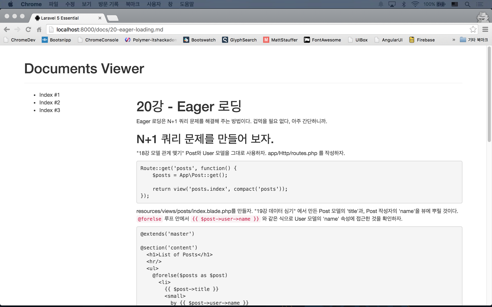

실전 프로젝트 1 - Markdown Viewer
27강 - Document 컨트롤러
이번 강좌에서는 routes.php 에서 콜백으로 정의했던 내용을 컨트롤러로 옮기고, ParsedownExtra도 좀 더 편하게 사용할 수 있도록 커스텀 Helper Function을 만들어 보자.
Custom Helper
라라벨 내장 Helper Function 처럼, 여기저기서 편하게 마크다운 컴파일러를 불러 쓸 수 있도록 하기 위해, app/helpers.php 를 만들자.
function markdown($text) {
return app(ParsedownExtra::class)->text($text);
}라라벨이 부트업될 때 helpers.php 파일도 포함시키기 위해, composer.json에 files 엔트리를 추가하자.
"autoload": {
"classmap": ["..."],
"files": ["app/helpers.php"],
"psr-4": {"...": "..."},
},autoload 파일을 리프레시하기 위해 아래 코맨드를 수행하자.
$ composer dump-autoload
# autoload가 잘 되었는지 tinker 로 테스트해 보자
$ php artisan tinker
>>> markdown('**bold**');
=> "<p><strong>bold</strong></p>"Document 컨트롤러를 만들자.
$ php artisan make:controller DocumentsController잘 생각해 보면, DocumentsController도 마크다운으로 컴파일된 내용을 데이터로 하고 뷰를 리턴하는 show() 메소드 하나면 충분하다.
<?php
namespace App\Http\Controllers;
use App\Document;
use App\Http\Requests;
class DocumentsController extends Controller
{
protected $document;
public function __construct(Document $document)
{
$this->document = $document;
}
public function show($file = null)
{
return view('documents.index', [
'index' => markdown($this->document->get()),
'content' => markdown($this->document->get($file ?: '01-welcome.md'))
]);
}
}생성자(Constructor)에서 App\Document 인스턴스를 주입(Dependency Injection)했다. 뷰에 2개의 데이터를 바인딩하는데 $index는 왼쪽 사이드 바에 보여줄 목록이며, $content는 본문이다.
Route를 정의하자.
Route 정의가 훨씬 간단해 졌다. 14강 - 이름 있는 Route에서 배운 것 처럼, Route 이름은 필수이다.
Route::get('docs/{file?}', [
'as' => 'documents.show',
'uses' => 'DocumentsController@show'
]);뷰를 만들자.
resources/views/documents/index.blade.php 를 만들자.
@extends('master')
@section('content')
<header class="page-header">
Documents Viewer
</header>
<div class="row">
<div class="col-md-3 sidebar__documents">
<aside>
{!! $index !!}
</aside>
</div>
</div>
<div class="col-md-9 article__documents">
<article>
{!! $content !!}
</article>
</div>
@stop서버를 띄우고 뷰에 잘 뿌려지는지 확인해 보자.

기본 기능은 이걸로 완료되었다. 다음 강의에서는 백엔드의 부하 감소를 위해 Cache 기능을 활용하는 것을 배우도록 하자. 좀 더 나이스하게 보이기 위해서 CSS 작업을 할 것인데, 빌드를 위해 Elixir도 사용해 볼 것이다.